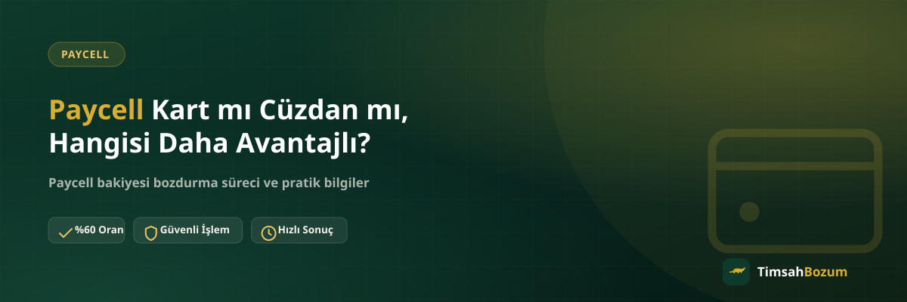

Paycell uygulamasında bir bakiyen varsa bunun cüzdanda mı yoksa karta bağlı bir bakiye mi olduğunu bilmek, bozum yapmadan önce aklına gelen ilk sorulardan biri. İkisi de bozdurulabilir bir Paycell bakiyesi sayılır, ama "hangisi daha avantajlı" sorusunun cevabı, neyi önceliklendirdiğine göre değişir. Bu yazıda kart ve cüzdan bakiyesinin kullanım açısından farklarına ve bozum sürecinde seni nelerin beklediğine bakıyoruz.
Paycell Kart ve Cüzdan Arasında Seçim Neden Önemli?
Paycell cüzdanı ve Paycell Kart, aynı uygulama içinde görünse de farklı amaçlarla kullanılan iki bakiye türü. Hangi tutarın nerede durduğunu bilmek, hem günlük kullanımda hem de bir bozum talebinde doğru bilgiyi paylaşmanı sağlar. Bu ayrımın teknik detaylarını daha önce ele aldığımız Paycell Kart bakiyesi ile cüzdan bakiyesi aynı mı? başlıklı yazımızda bulabilirsin; burada ise "hangisi daha avantajlı" sorusuna odaklanıyoruz.
Paycell Cüzdanının Avantajı Nedir?
Cüzdan bakiyesi, uygulamanın ana ekranında doğrudan göründüğü ve en geniş kullanım alanına sahip bakiye türü olduğu için pratiklik açısından öne çıkıyor. Fatura ödemesi, transfer veya alışveriş gibi birçok işlem doğrudan bu bakiyeden yürüdüğü için günlük kullanımda ek bir adım gerekmiyor.
Paycell Kart'ın Avantajı Nedir?
Paycell Kart'a bağlı bakiye, ayrı bir ödeme aracı olarak çalıştığı için bazı kullanıcılar bu bakiyeyi belirli bir harcama veya kampanya tutarını cüzdandaki genel bakiyeden ayrı tutmak amacıyla tercih ediyor. Bu şekilde ana bakiyeni karıştırmadan belirli bir tutarı takip edebilmek, kart bakiyesinin pratik tarafı.
Bozum Açısından Hangisi Daha Avantajlı?
Bozum sürecine gelince, kart ve cüzdan bakiyesi arasında bir öncelik veya avantaj farkı yok. İkisi de aynı Paycell hesabına bağlı olduğu için bakiye tabanlı değerlendirilir ve güncel referans oranımız her iki bakiye türü için de aynı şekilde geçerli.
Bozdurma Hızı Açısından Fark Var mı?
Hayır, hangi ekrandan bakiye bozduracaksan o ekranın güncel ve okunaklı görüntüsünü paylaşman yeterli. Süreç kart bakiyesinde de cüzdan bakiyesinde de aynı adımlardan geçer: bilgini paylaşırsın, oranı teyit edersin, onay sonrası ödeme WhatsApp üzerinden görüşülen yöntemle yapılır.
Kısmi Bozum Hangisinde Daha Kolay?
Her ikisi de bakiye tabanlı olduğu için kısmi bozum ikisinde de mümkün. Kart bakiyenin tamamını değil bir kısmını, cüzdan bakiyenin de yalnızca istediğin bölümünü bozdurmak isteyebilirsin; bu konuda bir kısıt yok, sadece hangi tutarı bozduracağını mesajında net belirtmen gerekiyor.
Hangi Durumda Hangisini Seçmelisin?
"Hangisi avantajlı" sorusunun pratik cevabı şu: bozdurmak istediğin tutar hangi ekranda görünüyorsa, bozum için önceliğin de o olur. Elinde her iki bakiye türü de varsa, ikisini aynı anda değerlendirmek de mümkün.
Günlük Kullanım İçin Hangisi Daha Pratik?
Günlük harcamalar için cüzdan bakiyesi genelde daha pratik, çünkü uygulamanın ana ekranında doğrudan görünür ve çoğu işlem buradan yürür. Kart bakiyesi ise daha çok ayrı tutulmak istenen tutarlar için kullanışlı.
Bozum İçin Hangisini Öncelikli Değerlendirmelisin?
Bozum tarafında öncelik senin elindeki tutara göre belirlenir, bakiyenin kart mı cüzdan mı olduğuna göre değil. Dolayısıyla "hangisini önce bozdurmalıyım" diye düşünmek yerine, hangi tutarı değerlendirmek istiyorsan onun güncel görüntüsünü paylaşman en doğru yaklaşım.
İkisini Birlikte Kullanmak Mümkün mü?
Evet, kart ve cüzdan bakiyesini aynı anda bozdurmak istemen önünde bir engel yok. İkisini ayrı ayrı bildirmek yerine tek mesajda toplamak, karşı taraftaki hattın bilgileri tek seferde değerlendirmesini sağlar ve süreci hızlandırır.
Kart ve Cüzdan Bakiyesini Aynı Anda Bozdurabilir misin?
Evet. Örneğin "Paycell cüzdanımda şu kadar, kartımda da şu kadar bakiye var, ikisini de bozdurmak istiyorum" şeklinde bir mesaj ve her iki ekranın güncel görüntüsü, süreci tek turda ilerletir. Ayrı ayrı mesajlarla göndermek yerine toplu bildirmek, bilgi tekrarını önler.
Hangi Senaryoda Ne Yapmalısın?
Elindeki bakiye türüne göre atman gereken adım aslında hep aynı: hangi ekranda tutar görüyorsan onun güncel görüntüsünü paylaşmak. Ama en sık karşılaşılan iki senaryoyu ayrı ayrı netleştirmek işini kolaylaştırabilir.
Sadece Kart Bakiyem Varsa Ne Yaparım?
Cüzdanında bakiye görünmüyor, sadece Paycell Kart ekranında bir tutar varsa bunu bozdurmak için ek bir işlem yapmana gerek yok. Kart ekranındaki tutarın güncel görüntüsünü paylaşman ve bu bakiyeyi bozdurmak istediğini belirtmen yeterli; cüzdana aktarım beklemek gerekmiyor.
Sadece Cüzdan Bakiyem Varsa Ne Yaparım?
Bu durumda da süreç aynı mantıkla işler: cüzdan ana ekranındaki güncel bakiyeni gösteren bir görüntü ve bozdurmak istediğin tutar yeterli. Kart ekranında ayrıca bir bakiye olup olmadığına bakmana gerek yok, sadece elinde olan bakiyeyi bildirmen işlemi başlatır.
Dikkat Edilmesi Gerekenler
Hangi bakiye türünü bozduracak olursan ol, süreç yalnızca resmi WhatsApp hattımız (+90 543 887 21 71) üzerinden yürür. Başka bir numaradan veya platformdan gelen taleplere bilgi paylaşmadan önce bu hattan teyit istemen en güvenli yol.
Ekran Görüntüsü Hangi Ekrandan Alınmalı?
Bozdurmak istediğin bakiyenin göründüğü ekranın net ve güncel bir görüntüsünü paylaşman yeterli. Kart ekranı ile cüzdan ekranını karıştırmak işlemi iptal etmez, ama doğru ekranın tekrar istenmesine yol açarak süreci bir adım geciktirebilir.
Hesabıma Erişim Vermem Gerekir mi?
Hayır. Kart veya cüzdan bakiyesi olması fark etmeksizin hesabına erişim, şifre veya SMS doğrulama kodu asla istenmez. Böyle bir talep gelirse bunun resmi süreçle ilgisi olmadığını bilmelisin.
Hangi bakiyeni bozdurmak istediğine karar verdiysen, ilgili ekranın güncel görüntüsüyle WhatsApp hattımıza yazarak süreci başlatabilirsin.
İlgili Yazılar
- Paycell Kart Bakiyesi ile Cüzdan Bakiyesi Aynı mı?
- Paycell Cüzdanıma Nasıl Bakiye Yüklerim?
- Paycell Bakiyesini Kısmi Bozdurmanın Avantajları